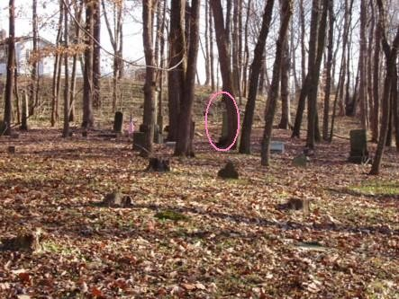

|
Click on any of the titles in the option box below to view the picture:
Hamilton-Lunbeck Cemetery is located off a private lane on the southeast side of Lunbeck Road outside Chillicothe, Ohio (Scioto Township, Ross County). The coordinates are 39° 17' 14.48" N, 82° 57' 43.28" W.
Hamilton-Lunbeck Cemetery is one of those cemeteries you could drive by a thousand times and never notice. The gravestones really blend in with all of the surrounding trees! I haven't visited many cemeteries located in a woods like this one is. I enjoyed walking around looking at all of the gravestones, listening to my feet shuffle through all of the fallen leaves. A lot of the gravestones are in pretty good shape, but there are many that have broken and fallen over the years.
Angie Plank, a website visitor who is more observant that me, noticed what appears to be the ghost of a young girl in one of my photos! Sure, it could just be our eyes playing tricks on us, but it does look like there's someone standing by the tree:

A huge thanks to Mike Hill for telling me about this cemetery, and for visiting it with me...I'm so glad he happened to notice it and remember the location!
Where do you want to go? Select your destination:
|